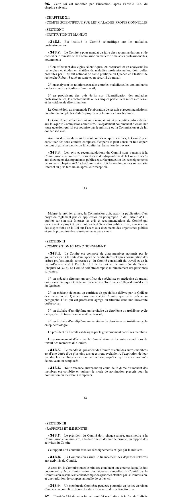

art-96-LMRSST : insertion après art. 348 LATMP
Article modificateur de la LMRSST (L.Q. 2021, c. 27).
- Insère un nouvel article dans la Loi sur les accidents du travail et les maladies professionnelles (RLRQ c.
📄 PDF officiel (page 33) · 🌐 LegisQuébec
Texte officiel
Cette loi est modifiée par l’insertion, après l’article 348, du chapitre suivant : « CHAPITRE X.1 « COMITÉ SCIENTIFIQUE SUR LES MALADIES PROFESSIONNELLES « SECTION I « INSTITUTION ET MANDAT
« 348.1. Est institué le Comité scientifique sur les maladies professionnelles.
« 348.2. Le Comité a pour mandat de faire des recommandations et de conseiller le ministre ou la Commission en matière de maladies professionnelles, notamment :
1° en effectuant des vigies scientifiques, en recensant et en analysant les recherches et études en matière de maladies professionnelles, dont celles produites par l’Institut national de santé publique du Québec et l’Institut de recherche Robert-Sauvé en santé et en sécurité du travail;
2° en analysant les relations causales entre les maladies et les contaminants ou les risques particuliers d’un travail;
3° en produisant des avis écrits sur l’identification des maladies professionnelles, les contaminants ou les risques particuliers reliés à celles-ci et les critères de détermination.
Le Comité doit, au moment de l’élaboration de ses avis et recommandations, prendre en compte les réalités propres aux femmes et aux hommes.
Le Comité peut effectuer tout autre mandat qui lui est confié conformément aux lois que la Commission administre. Il a également pour mandat d’examiner toute question qui lui est soumise par le ministre ou la Commission et de lui donner son avis.
Aux fins des mandats qui lui sont confiés ou qu’il a initiés, le Comité peut constituer des sous-comités composés d’experts et peut consulter tout expert ou tout organisme public ou lui confier la réalisation de travaux.
« 348.3. Les avis et recommandations du Comité sont transmis à la Commission et au ministre. Sous réserve des dispositions de la Loi sur l’accès aux documents des organismes publics et sur la protection des renseignements personnels (chapitre A-2.1), la Commission doit les rendre publics sur son site Internet au plus tard un an après leur réception.
Malgré le premier alinéa, la Commission doit, avant la publication d’un projet de règlement pris en application du paragraphe 1° de l’article 454.1, publier sur son site Internet les avis et recommandations du Comité qui concernent ce projet et qui n’ont pas déjà été rendus publics, et ce, sous réserve des dispositions de la Loi sur l’accès aux documents des organismes publics et sur la protection des renseignements personnels. « SECTION II « COMPOSITION ET FONCTIONNEMENT
« 348.4. Le Comité est composé de cinq membres nommés par le gouvernement à la suite d’un appel de candidatures et après consultation des ordres professionnels concernés et du Comité consultatif du travail et de la main-d’œuvre visé à l’article 12.1 de la Loi sur le ministère du Travail (chapitre M-32.2). Le Comité doit être composé minimalement des personnes suivantes :
1° un médecin détenant un certificat de spécialiste en médecine du travail ou en santé publique et médecine préventive délivré par le Collège des médecins du Québec;
2° un médecin détenant un certificat de spécialiste délivré par le Collège des médecins du Québec dans une spécialité autre que celle prévue au paragraphe 1° et qui est professeur agrégé ou titulaire dans une université québécoise;
3° un titulaire d’un diplôme universitaire de deuxième ou troisième cycle en hygiène du travail ou en santé au travail;
4° un titulaire d’un diplôme universitaire de deuxième ou troisième cycle en épidémiologie.
Le président du Comité est désigné par le gouvernement parmi ses membres.
Le gouvernement détermine la rémunération et les autres conditions de travail des membres du Comité.
« 348.5. Le mandat du président du Comité et celui des autres membres est d’une durée d’au plus cinq ans et est renouvelable. À l’expiration de leur mandat, les membres demeurent en fonction jusqu’à ce qu’ils soient nommés de nouveau ou remplacés.
« 348.6. Toute vacance survenant au cours de la durée du mandat des membres est comblée en suivant le mode de nomination prescrit pour la nomination du membre à remplacer. « SECTION III « RAPPORTS ET IMMUNITÉS
« 348.7. Le président du Comité doit, chaque année, transmettre à la Commission et au ministre, à la date que ce dernier détermine, un rapport des activités du Comité.
Ce rapport doit contenir tous les renseignements exigés par le ministre.
« 348.8. La Commission assure le financement des dépenses relatives aux activités du Comité.
À cette fin, la Commission et le ministre concluent une entente, laquelle doit notamment prévoir l’autorisation des dépenses annuelles du Comité par la Commission, lesquelles tiennent compte des priorités établies par la Commission, et une reddition de comptes annuelle de celles-ci.
« 348.9. Un membre du Comité ne peut être poursuivi en justice en raison d’un acte accompli de bonne foi dans l’exercice de ses fonctions. ».
Texte de l’article 96 LMRSST, extrait de la couche texte du PDF officiel (page 33), sans OCR ni retouche. La capture ci-dessous et le PDF font foi.
{kind=link}

Toucher l'image pour l'agrandir🔗 Ouvrir a cette page : LMRSST.pdf : page 33
- Insère un nouvel article dans la Loi sur les accidents du travail et les maladies professionnelles (RLRQ c. A-3.001), après l'art. 348.
Portée et effet
Adopté dans le cadre de la réforme de 2021 modernisant le régime de santé et de sécurité du travail, l'article 96 de la LMRSST insère une nouvelle disposition dans la LATMP, en lien avec art. 348 LATMP. Le texte en vigueur de la disposition visée intègre désormais cette modification ; le libellé exact figure dans la capture officielle ci-dessus. Le chapitre I de la LMRSST réforme la LATMP : comité scientifique des maladies professionnelles, réadaptation et retour au travail, indemnités, procédures et recours.
La jurisprudence porte sur la disposition modifiée, art. 348 LATMP, et non sur l'article modificateur lui-même (les décisions et leurs PDF sont rassemblés sur la page de cet article).
Voir aussi
- 🎯 Article(s) modifié(s) : art. 348 LATMP · faculté : l'employeur tenu personnellement au paiement des prestations peut demander a la Commi plus étre régi par le présent chapitre et d'étre assujetti au chapitre IX.
- 🗓️ Entrée en vigueur : à la nomination membres CMPP-O (art. 313 ¶10) (voir art. 313 LMRSST)
- 📚 Chapitre : Chap. I : modifications à la LATMP
- ↑ Loi : LMRSST
Pages qui pointent ici (2)
- art-348-LATMP : Commission Recueil législatif
- LMRSST : Chapitre I : Modifications à la LATMP Recueil législatif